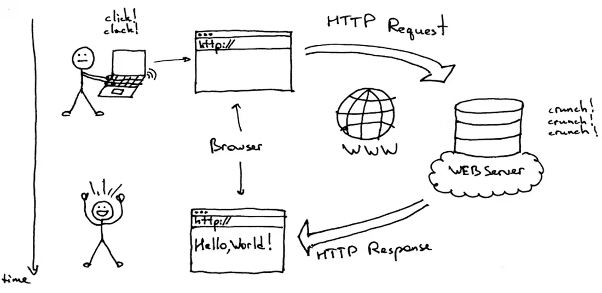

Requesting a Web Page
When a user types a web address into the address bar, the browser first performs a DNS lookup to convert the domain name into an IP address. After finding the IP address, the browser sends a request to the server for the files needed to display the webpage. This process happens very quickly behind the scenes, allowing users to visit websites without needing to know the technical details involved. Without DNS, users would have to remember and type long numerical IP addresses instead of simple website names.

Simple overview of how a browser sends a request and receives a response from a server.
Data Transfer and Packets
When a webpage is requested, the data does not arrive as one large file. Instead, it is sent in many small pieces called packets. The browser tracks these packets and reassembles them when they arrive to ensure the webpage is displayed correctly. Sending data in packets makes internet communication more reliable and efficient. If one packet is delayed or lost, it can be resent without restarting the entire transfer, which helps the browser load webpages more accurately.
Protocols
Protocols such as TCP/IP and HTTP allow communication between the browser and the server. HTTP defines how requests and responses are formatted, while TCP/IP ensures that the data packets are delivered to the correct destination. When a browser requests a webpage, the server responds with a status code, such as "200 OK," which means the request was successful. These protocols are important because they create a standard way for browsers and servers to communicate. Without them, devices would not be able to exchange information in a consistent and dependable way.
Building the Web Page
Once the data is received, the browser begins to process the files. HTML provides the structure of the webpage, including headings, paragraphs, images, and links. CSS is used to control the appearance of the page, such as colors, fonts, and spacing. JavaScript adds interactivity, allowing the page to respond to user actions like clicking buttons or filling out forms. Each of these technologies has a different role in the final webpage. HTML builds the structure, CSS improves the appearance, and JavaScript adds behavior, which allows modern websites to feel much more interactive than older static pages.
Rendering the Web Page
The browser uses a rendering engine to combine all of the files and display the final webpage on the screen. Modern browsers also use advanced architecture, such as separating tabs into different processes, to improve performance and prevent crashes. In the past, different browsers used different rendering engines, that sometimes caused websites to look or behave differently depending on the browser. This inconsistency made web development more difficult and increased the need for standard web technologies.
Key Technologies Used in Browsers
| Technology | Purpose |
|---|---|
| HTML | Provides the structure of a webpage |
| CSS | Controls the appearance and layout |
| JavaScript | Adds interactivity and dynamic behavior |
| HTTP | Transfers data between browser and server |